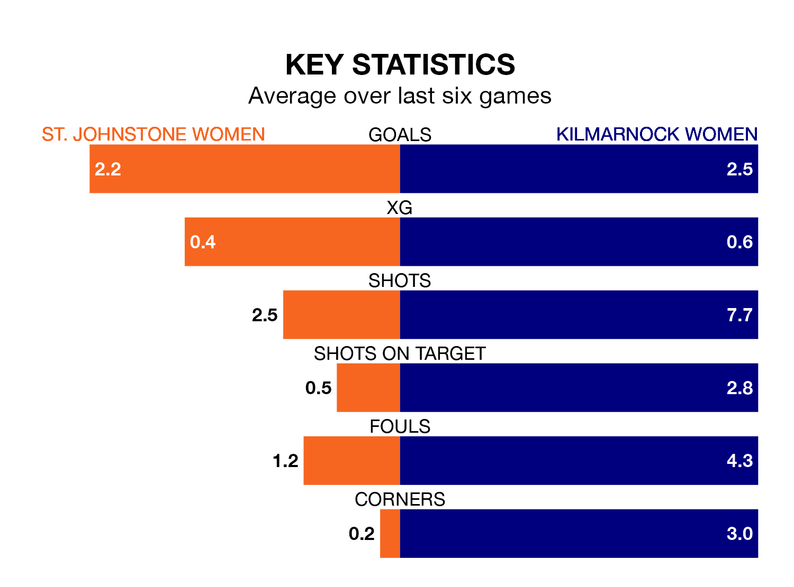

Kilmarnock Women travel to the Riverside Stadium for Sunday lunchtime's match against St. Johnstone Women looking to bounce back from defeat last time out in SWPL 2.
Kilmarnock, who sit second in the league after 20 games, fell to a 4-0 away defeat to Gartcairn Women on Wednesday.
They face a St. Johnstone side who picked up a win in their last match, a 3-0 victory against Glasgow Women, and who sit fifth in the table.
With 51 goals in 20 games so far this season, Kilmarnock are the league's second-highest scorers with 2.5 goals per game. And they are conceding fewer than average, letting in 26 goals at a rate of 1.3 per game.
St. Johnstone are also above average scorers, with 2.0 goals per game, compared to a league average of 1.9. They have also conceded 2.0 goals per game.
In the last 10 years, St. Johnstone and Kilmarnock have played each other on 13 occasions. St. Johnstone won four of them, Kilmarnock five, and they drew four times.
On average, St. Johnstone scored 1.6 goals and Kilmarnock 1.8 in those matches.
Their last meeting was on January 14, when Kilmarnock won 3-1 at home.
The hosts are in good form in SWPL 2, with four wins and a draw from their last six games.
With three wins and a draw over that period, the away team's form is worse – they have taken 10 points from 18, compared to St. Johnstone's 13.
Updated: 15:10 (UTC), 15/03/24